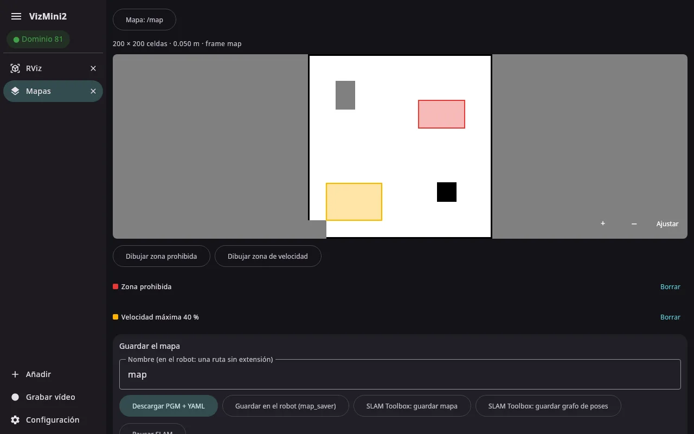

Guardar mapas y dibujar zonas de Nav2
Objetivo: guardar el mapa que ha construido un robot, limpiar costmaps atascados y dibujar zonas prohibidas y de límite de velocidad para Nav2 sobre el mapa, sin editar imágenes a mano.

Necesitas un robot (o una simulación) con Nav2 o SLAM Toolbox publicando un map, por ejemplo la
simulación del propio Nav2 de nav2_bringup.
Guardar el mapa
Añade una pestaña Mapas con +. Muestra
/map; Mapa elige otroOccupancyGrid. Haz zoom con dos dedos (la rueda en el PC) o los botones + / −; Ajustar lo enseña entero.En Guardar el mapa, escribe un nombre. Descargar PGM + YAML lo guarda en el móvil (con el menú de compartir) o en el PC (un diálogo de ficheros), en el formato que carga
map_server.Para guardarlo en el robot, Guardar en el robot (map_saver) llama al guardador de mapas de Nav2; entonces el nombre es una ruta en el robot sin extensión. Con SLAM Toolbox están además SLAM Toolbox: guardar mapa, guardar grafo de poses (para seguir mapeando después) y Pausar SLAM.
Limpiar los costmaps
Cuando el robot sigue esquivando obstáculos que ya no están, Costmaps → Limpiar el costmap global o el local, o Limpiar todos.
Zonas prohibidas y de velocidad
Pulsa Dibujar zona prohibida y toca las esquinas de la zona en el mapa (Deshacer esquina si fallas una), y luego Terminar zona. Para una zona lenta, Dibujar zona de velocidad y elige el límite en porcentaje de la velocidad máxima.
En Zonas para Nav2, Publicar: las zonas salen como máscaras de filtros de costmap (
/keepout_filter_mask,/speed_filter_mask), que se quedan publicadas, con la información del filtro si la marcas. Descargar máscara las guarda como PGM + YAML para servirlas conmap_server.Nav2 las usa cuando su costmap tiene el plugin KeepoutFilter o SpeedFilter leyendo ese topic de información del filtro (mira la guía de Nav2 Navigating with Keepout Zones). Envía una meta que cruce la zona (Enviar metas a Nav2) y el robot la rodea, o va más despacio.
Las zonas se guardan con la pestaña. Más en Mapas.